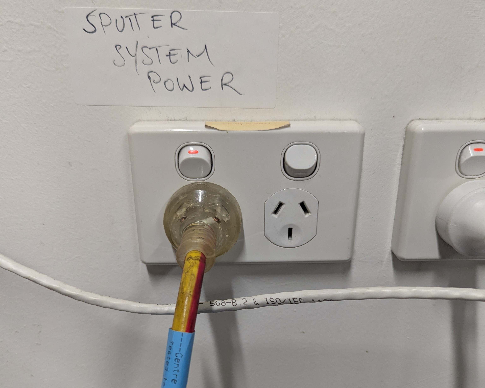
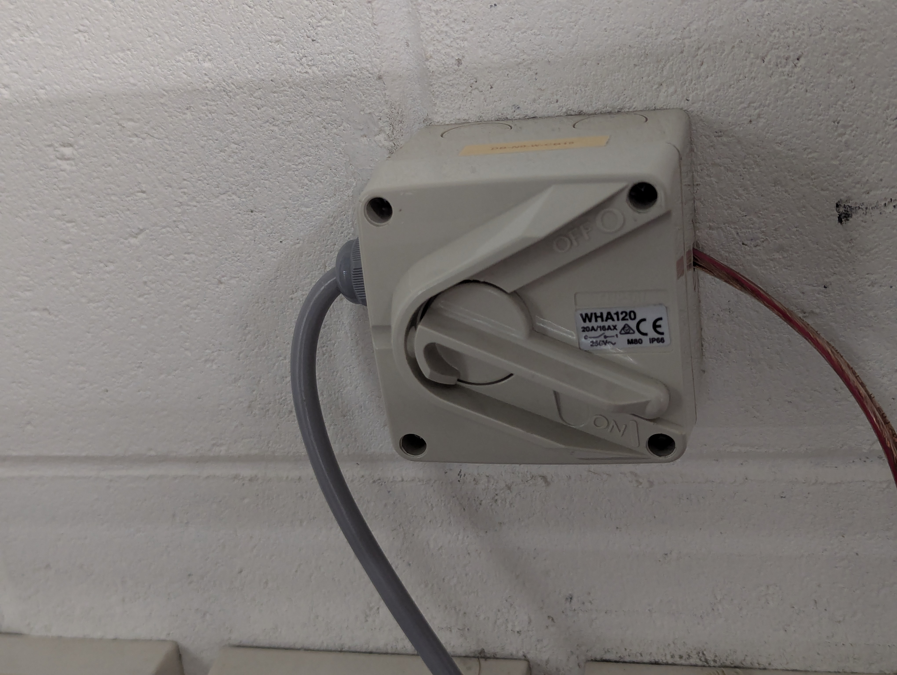
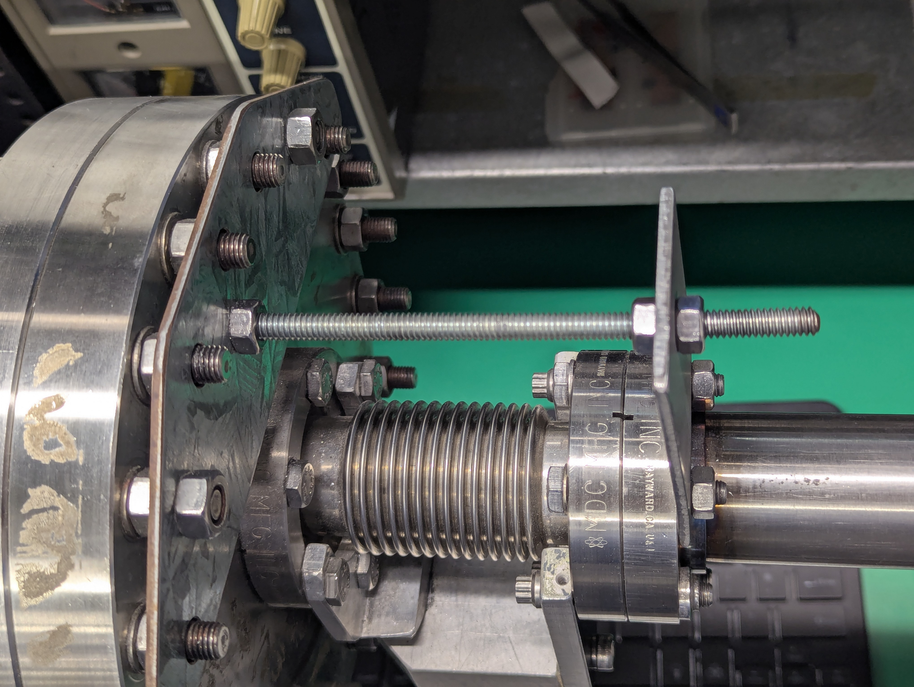
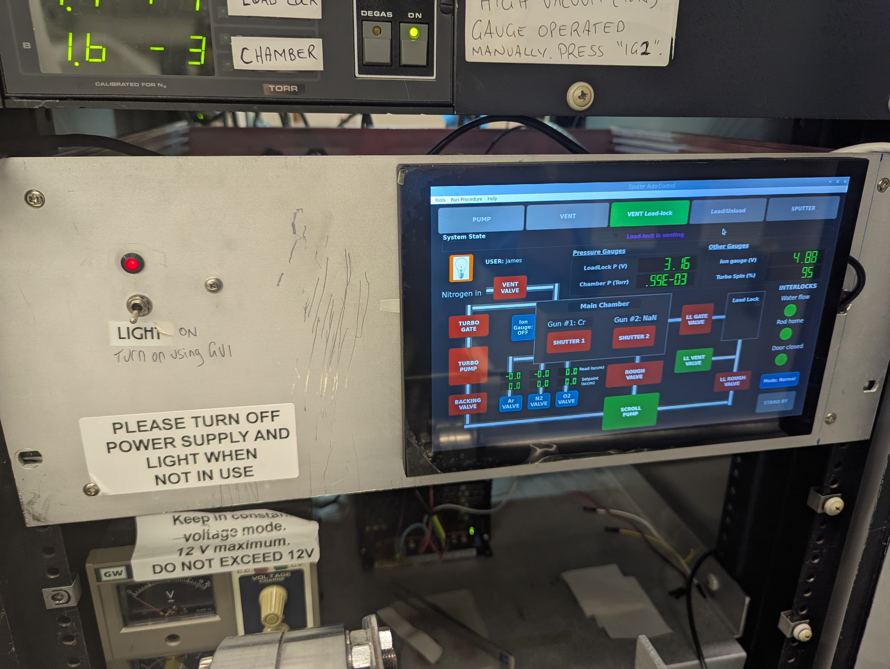
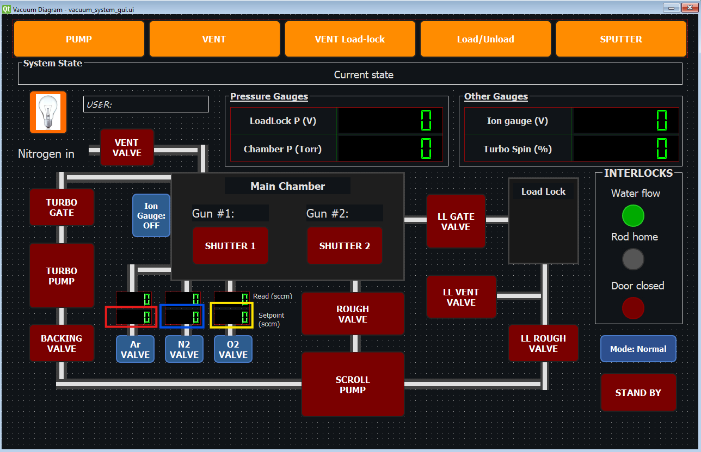

The sputter system uses a custom software running on low-cost hardware. A raspberry Pi 5 runs the software (written in python) and interfaces via serial connection with an Arduino Mega running custom firmware (C++). The arduino operates relays that control valves, pressure gauges and vacuum pumps and other system components...
🚀 System Startup Procedure
Prerequisites
✅ System power is ON
If system is in unpowered state turn on the power. There is a single power line that supplies the system on wall at right labelled "SPUTTER SYSTEM POWER".
The DC and RF power supplies for sputtering are powered separately as shown in the figure below. Turn this on too.

(a) Main power for system.

(b) This one supplies power to the DC & RF supplies. Here it is shown in the "on" position.
✅ Raspberry Pi has booted to desktop.
When the power for the system is switched on, the RPi5 will auto-boot. Both screens should turn on.
If it does not boot, the RPi5 can be turned on by the power button on its case.
If the touch-screen is blank but the larger screen shows content after booting, unplugging & re-plugging the HDMI out from the RPi to the small screen should fix this.
✅ Arduino controller is connected via USB. This should be the case.
⚠️ If control program is already running, skip to step 3
Launching the Control Application
Note that the bluetooth keyboard will need a 5 seconds to wake up and connect after you push some buttons on it before input from it will show up on computer. It also needs to be charged occaisonally.
Start the Application
Locate the Sputter Control desktop icon. It has a sun image icon ☀️.
Double-click to launch the Python-based control application.
This will launch a terminal window that should be positioned on the large screen. This window shows running messages that details the system operation and is useful for debug.
A user account login window will show first prior to displaying the GUI.
Login with your user account or create new account & then login.
Main control window will then open. Drag this window onto the small screen (touch-screen) and double click the top title bar to expand the GUI window to fill the small screen.
You can use touch on the small screen to activate buttons on the GUI or keep using mouse.
Check System State Display
Observe the System State indicator in the control window
Current system status will be displayed (e.g., "Vented", "pumping", "High Vacuum")
All sensor readings (pressures, door status, water flow) should update automatically, these are connected to the interlock indicators (circles red/green in the INTERLOCKS box).
There are 3 interlocks that need to show True state (green indicator on GUI). These show the state of the water switch, rod home switch and the door switch. These are True when water flowing, load-lock rod is in home position & the chamber door is closed respectively.
Verify Automated Procedure Buttons
Five main procedure buttons should be visible and enabled (not greyed out):
🌊 PUMP - Start pump-down sequence
💨 VENT - Vent chamber to atmosphere
📦 LOAD/UNLOAD - Load-lock operation
🔬 SPUTTER - Enter sputtering mode
🏠 STAND BY - Return system to default state or standby state. This should be used at end of session to put system into low-power stand-by state.
These automated procedure buttons (as well as the shutter buttons, Ion gauge & chamber light) are the only operable buttons when the GUI is running in "Normal" mode. Normal is the only mode accessible by a level 1 user account.
BOOT TROUBLESHOOTING
If the GUI displays with red indications for all three interlocks and the valve buttons display greyed out, it is likely that the arduino has failed to connect to RPi5.
Verify Arduino Connection
Check USB cable between arduino & RPi5. Ensure that the arduino shows LED on indicator.
Remove and replace USB cable to reset the connection.
📥 Loading Samples and Targets
Vent chamber if necessary. This is done by pressing the "VENT" button on the GUI. Follow all directions that show in message windows such as ensuring that the door clamps are not closed prior to venting.
Wait for the vent procedure to complete. Vent gas injection should stop automatically after the chamber door opens. Observe terminal output for procedure details.
Starting from Vented Chamber State
Target Installation and Sample Loading
Install Sputter Targets (if not already in place)
Ensure targets are clean and properly aligned.
Secure target with 4 Phillips head screws as shown in training.
Secure outer electrode of gun with 3 circular head hex key screws.
Target installation is demonstrated during training.
Remember that heat removal by water cooling is essential and targets must be flat (on back surface) and have good contact with the copper gun plate.
Load Sample and Sample Stage
Place sample on sample stage holder (take holder out and do sample prep on clean foil surfaces).
Position stage on central pllar or on the load-lock rod.
Verify samples are secure. Vacuum compatible double-sided copper tape or SEM mount adhesive should be used. Don't use non-vacuum compatible tape.
Door Closure and Clamp Procedure
⚠️ CRITICAL: Proper door sealing is essential for vacuum integrity
Close and Seal Chamber Door
Close door carefully, ensuring O-ring is clean and properly seated
Tighten both door clamps:
The clamps are simple nuts on bolts. a T-key with hex socket tool for the task is hanging nearby from a ribbon.
Both clamps should be tightened to close the gap between sealing surface and door o-ring before starting pump-down. They don't need to be tightened excessively.
Initiate Pump-Down
Click/press the PUMP button
Monitor pressure readings on display and/or the Vacuum gauge controller.
If chamber pressure does not drop within 5s or so when pump-down starts:
Chamber is leaking!
Tighten further the upper and/or lower clamps to improve door seal.
If the chamber pressure does not start dropping within 30s the software will abort the pumpdown procedure in order to protect the pump.
Wait for pump procedure to complete, observe terminal output for details of what is occurring at each step of the pump-dowb procedure. Pump-down should take system all the way to the high vacuum state before completing.
If Ion guage turns itself off, you can turn it on/off at will by pressing the button.
Starting from Pumped Chamber State
If the chamber is already under vacuum, use the Load-Lock system to introduce samples without venting the main chamber.
Load-Lock Sample Loading Procedure
Vent Load-lock
Click VENT Load-lock button
System will automatically:
Vent load-lock chamber
Wait for load-lock to reach atmospheric pressure.
Stop venting.
Load Sample onto Load-Lock Rod
Open small load-lock door
Attach sample stage to load-lock rod bayonet fitting
Close load-lock door
Load/Unload Procedure
Click LOAD/UNLOAD button
System will automatically:
Evacuate load-lock chamber if it is vented.
Open gate valve between load-lock and main chamber once the pressure in both chambers is similar.
A dialog box will appear and remain in place during your operation of the load-lock rod.
Move the load-lock rod into the main chamber and get the sample stage onto the central shaft.
Retract the load-lock rod to home position.
⚠️ CRITICAL: Rod must be fully retracted to home position before continuing.
Click Load-unload finished or cancel button in the dialog box when complete.
This will close the gate valve automatically and complete the load-lock sequence.
Click "PUMP" button again to return system to high vacuum state in order to proceed to sputter mode.

(a) Load-lock Z-position adjustment nuts. Hold rod up/down to release pressure on nuts, then adjust nuts to change rod height. Adjusting these during loading/unloading is necessary.

(b) Chamber light has a switch and is also operated by the GUI. Switch shown at right in "on" position (LED lighted red). Both switch and button must be on for light to operate. Stage rotation power supply shown at bottom right.
Use Z-position adjustment nuts on load-lock rod to set proper height for sample stage during loading/unloading.
Chamber light should turn on automatically during load-lock operation. If not, manually turn it on using the button on the GUI.
⚠️ Turn off after use - do not leave light on during sputtering.
Sample Stage Rotation (Optional)
If uniform coating is desired, enable stage rotation:
Turn on the DC variable power supply that is connected to the stage rotation motor.
This is located on the shelf underneath the touchscreen, shown above in right image.
Use constant voltage mode
Adjust voltage knob: 0-6V to set rotation speed
Recommended during deposition: 4V
Absolute maximum: 12V
⚠️ Turn off power supply when rotation not in use This component is not linked to the software in any way and must be manually controlled.
🔬 Deposition Procedure (DC Sputtering)
Starting from High Vacuum State
Pump system to high vacuum state if not already there by pressing PUMP button.
Wait for pump procedure to complete and system to reach high vacuum.
It is recomended to reach at least < 6 x 10⁻5 Torr before proceeding to sputtering.
System base pressure appears to be around 1.5 x 10⁻5 Torr at the moment.
SPUTTER MODE
Enter Sputter Mode
Click SPUTTER button on main control window
System will enter sputtering mode
This will turn on the interlock that provides mains power to the DC & RF supplies that power the sputter guns.
The power supplies cannot be turned on outside of sputter mode due to the safety interlock.
System state display will update to "Sputter Mode"
Sputter mode will drop the TMP speed to 60% and maintain it at this level by turning it on and off as needed.
Set Gas Flow
Gas flow setpoint is set by simply clicking the gas flow setpoint indicator button for the MFC/s that you wish to use. See the figure below.
Click inside one of the colored boxes shown below to bring up the set gas flow setpoint dialog. Set the setpoint using the dialog.
Allow 5s or so for the indicators on the GUI to update to display the correct setpoint and flow readings.
If setpoint shows yet the measured flow never reaches setpoint, the gas cylinder for that gas may be empty.

(a) Click inside the colored box to bring up the set gas flow setpoint dialog.
Chamber Flush (Optional but Recommended)
Set Argon flow to 100-200 sccm for 1 - 10 minutes
This helps remove remaining residual air and water vapor from chamber.
Monitor chamber pressure during flush.
Set Sputtering Gas Flow
Reduce Argon flow to sputtering conditions
Typical DC metal sputtering: 20-100 sccm Ar
Target chamber pressure: 1-7 × 10⁻³ mbar
Wait for pressure to stabilize.
DC Sputtering Operation
Verify Electrical Connections
✅ Electrical cable between gun and DC power supply is connected
✅ Grounding cables are properly connected
✅ All connections are secure
Power Supply Setup
Turn on DC power supply for the gun(s) being used
Set power setpoint:
Typical range: 30-100 W
Absolute maximum: 300 W
Start Deposition Monitor
Launch MaxTec deposition monitor for target material
Verify monitor is reading and calibrated
Reference: MaxTec_FilmMonitor.pdf (Section 10.6 for tooling factor calibration)
Ignite Plasma
Press Start on DC power supply to apply power
Plasma should ignite on gun - you will see characteristic glow
Close front window shutter to prevent window coating
Verify deposition monitor shows:
Non-zero deposition rate
Increasing thickness reading
Begin Sample Deposition
Open gun shutter to start deposition on sample
⏱️ Restart MaxTec monitor simultaneously for accurate thickness reading
Monitor deposition rate and thickness
Run to Desired Thickness
Continue sputtering until target thickness achieved
Typical rates vary by material and power (refer to training or previous logs)
🛑 System Shutdown
Post-Deposition Procedure
Terminate Sputtering
Turn off DC power supply/s
Turn off breaker switch at back of power supply
Allow plasma to extinguish completely
Stop Gas Flow
Click SET GAS button and set all flows to 0 sccm
OR close MFC dialog (flows will automatically stop)
Verify gas flow stops on MFC display
Remove Sample via Load-Lock
Click LOAD/UNLOAD button
Follow load-lock procedure in reverse:
System vents load-lock
Open small door when dialog appears
Use rod to retrieve sample stage from chamber
Remove sample from stage
Leave sample stage inside load-lock for next user
Close load-lock door
Click Continue
Re-Evacuate Load-Lock
Click LOAD/UNLOAD again to evacuate load-lock
System will pump down load-lock automatically
Return System to High Vacuum
Click PUMP button to return system to stable high vacuum state
Final system state should show:
✅ Roughing pump ON (green)
✅ Rough valve OPEN (green)
✅ Turbo pump ON & ~100% speed (green)
✅ Gate valve CLOSED (red - correct)
✅ All other valves CLOSED (red - correct)
✅ Ion gauge ON (green - if high vacuum achieved)
Final Checks
Verify Equipment Status
❌ All DC/RF sputter supplies are OFF
❌ DC supply for stage rotation is OFF
❌ Chamber light is OFF
Update Target Labels
If targets were changed, update sticky note labels on chamber door
Write material name and installation date
Complete Instrument Logbook
Record session information:
Date and time
User name
Target material(s)
Process parameters (power, pressure, gas flow)
Deposition time and estimated thickness
Any issues or anomalies
Leave System in Standby
System can be left in high vacuum state for next user
Do not close control application unless instructed
🔄 Load-Lock Operation
Load-Lock Rod Control
The load-lock rod extends into the main chamber through a gate valve to position samples.
Key Components:
Bayonet fitting - Quick-connect mount for sample stage
Z-position adjustment nuts - Control vertical position of rod end
Gate valve - Separates load-lock from main chamber
Load-Lock Procedure Summary
Loading Sample:
LOAD/UNLOAD → vent load-lock → open small door
Attach stage to rod → close door → Continue
System pumps load-lock → opens gate valve automatically
Adjust Z-nuts → position stage in chamber → detach rod → retract rod → Continue
Removing Sample:
LOAD/UNLOAD → gate valve opens → dialog appears
Extend rod → adjust Z-nuts → attach to stage → retract to home → Continue
System closes gate valve → vents load-lock
Open small door → remove stage → close door → Continue (re-evacuates load-lock)
🎓 Load-Lock Practice Procedure
⚠️ Important: The load-lock can be difficult to master initially. Practice with the chamber vented and door open until confident you can operate it blind (door closed, at vacuum).
If sample stage is dropped inside chamber during attempted load-lock use, the chamber must be vented to retrieve it!
Setup for Practice
Prepare System for Practice
Use automated procedures:
Click VENT to vent main chamber (if not already vented)
Click LOAD/UNLOAD to vent load-lock
Wait for both to reach atmospheric pressure
Ensure load-lock rod is in home position (fully retracted)
Open Chambers
Open main chamber door
Open small load-lock door
Verify rod is retracted
Manual Gate Valve Control for Practice
Access Manual Control Mode
On main control window, select Tools → Manual Control
Manual control interface will open
⚠️ CAUTION: Manual mode allows all valves to be operated manually. Opening the wrong valve could cause serious damage to the system! We will ONLY use this to open the load-lock gate valve manually
Manually Open Gate Valve
⚠️ CRITICAL WARNING: It is possible to close the gate valve while the load-lock rod is extended through it into the chamber. This would destroy the gate valve mechanism!
Before touching gate valve button, ALWAYS verify rod is in home position!
Confirm load-lock rod is fully retracted to home position
Click Load-Lock Gate Valve button to open valve
Practice Loading
Practice Sample Stage Loading
With main door open and gate valve open, practice:
Extending rod into chamber
Adjusting Z-position nuts to align stage with central shaft
Rotating stage onto shaft (bayonet fitting)
Adjusting nuts again to relieve pressure on fitting
Rotating rod 90° to release from stage
Retracting rod without pulling stage off shaft
Practice Unloading
Reverse the sequence:
Adjust Z-nuts for proper height
Engage bayonet fitting with stage
Rotate to lock
Retract rod with stage attached
Return to home position
Cleanup After Practice
Close Manual Mode
When stage is loaded and rod is at home position
Close gate valve (rod MUST be home!)
Close Manual control window
Return to Normal Operation
Return to main control window
System returns to automated control
Close main chamber door when ready
⚠️ Safety Guidelines
General Safety
🚫 Never open main chamber door while system is under vacuum
🚫 Never force any valve or mechanical component
🚫 Do not operate system without proper training
⚠️ Always wear appropriate PPE (safety glasses, gloves when handling samples)
⚠️ High voltage present when DC/RF supplies are active
⚠️ Hot surfaces - allow targets and chamber to cool before handling
Pressure Safety
✅ Always verify chamber is vented before opening door
✅ Monitor pressure readings during all operations
⚠️ Sudden pressure loss may indicate leak or valve malfunction
⚠️ Inability to reach high vacuum may indicate O-ring or seal issue
Electrical Safety
🔌 Verify all electrical connections before applying power
⚠️ DC supplies can deliver high currents - ensure proper grounding
⚠️ RF supplies generate high frequency radiation - keep clear
🚫 Do not modify electrical connections without supervision